00開始之前要準備什麼
| 要準備的東西 | 說明 |
|---|---|
| Cloudflare 帳號 | 到 cloudflare.com 免費註冊。 |
| 網站程式碼放在 GitHub | GitHub 是存放網站程式碼的平台；「倉庫」就是存放這個網站檔案的專案（本例是 ZhaoHouLin/ZZ）。請先請開發者確認：你的帳號能存取倉庫，網站可產生靜態檔案，並提供建置命令、輸出資料夾與正式分支名稱。 |
| 一張信用卡 | 只有買網域時要付款。 |
Workers 是 Cloudflare 用來放網站與執行程式的平台；本文只示範放上已產生的靜態網頁檔案。
01把網站放上 Cloudflare
1登入 Cloudflare，打開「運算」
登入後會看到帳戶首頁，網站相關的功能都在左邊選單的「運算」裡。
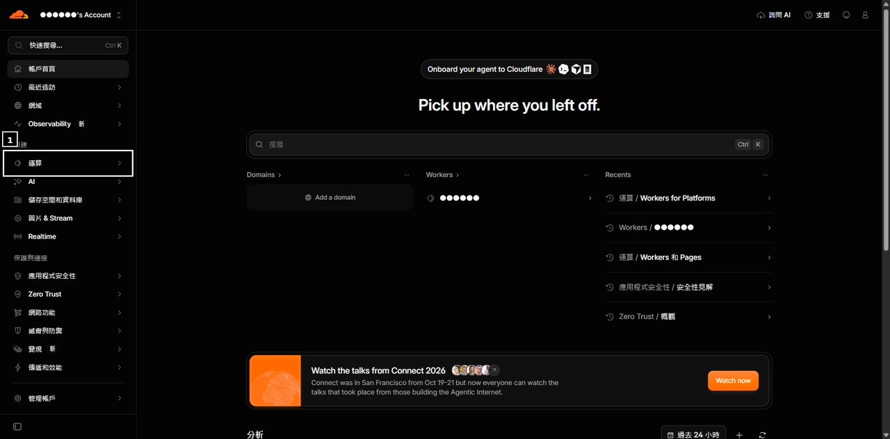
- 點左邊選單的 1「運算」。
2進入「Workers 和 Pages」
這裡會列出你帳號裡所有的網站和程式。
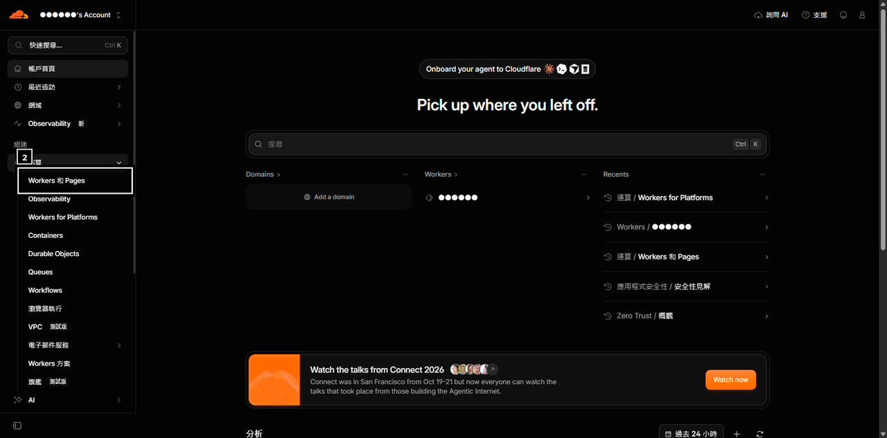
- 點 2「Workers 和 Pages」。
3建立應用程式
新增一個網站專案。
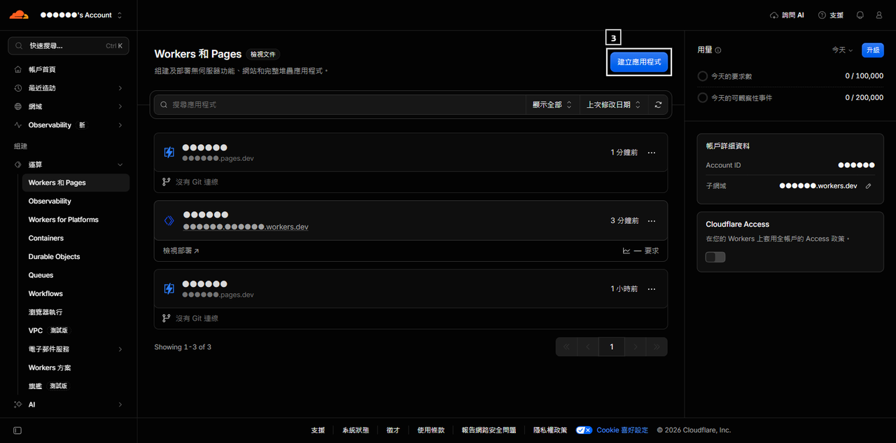
- 點右上角的 3「建立應用程式」。
4連接 GitHub
讓 Cloudflare 讀得到放在 GitHub 上的網站程式碼。
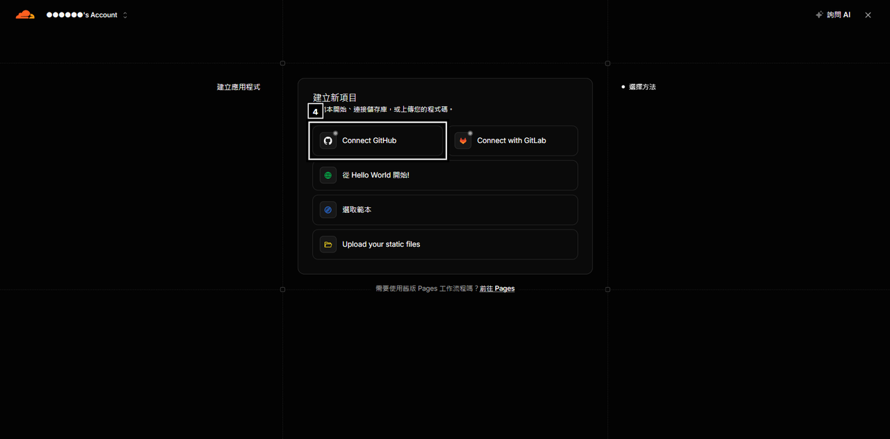
- 點 4「Connect GitHub」。畫面會跳到 GitHub。
5在 GitHub 上授權 Cloudflare
這一步在 GitHub 網站上做：登入 GitHub，選擇要讓 Cloudflare 讀取哪個帳號。
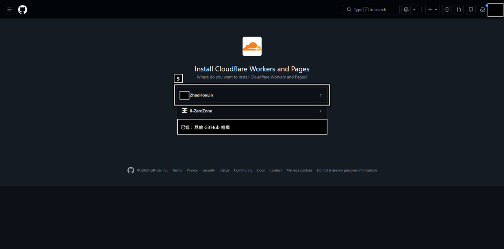
- 如果出現 GitHub 登入頁，先用你的 GitHub 帳號登入。
- 點 5 放網站程式碼的那個帳號。
6只開放需要的倉庫
只讓 Cloudflare 讀這一個網站的倉庫，其他倉庫不開放，比較安全。
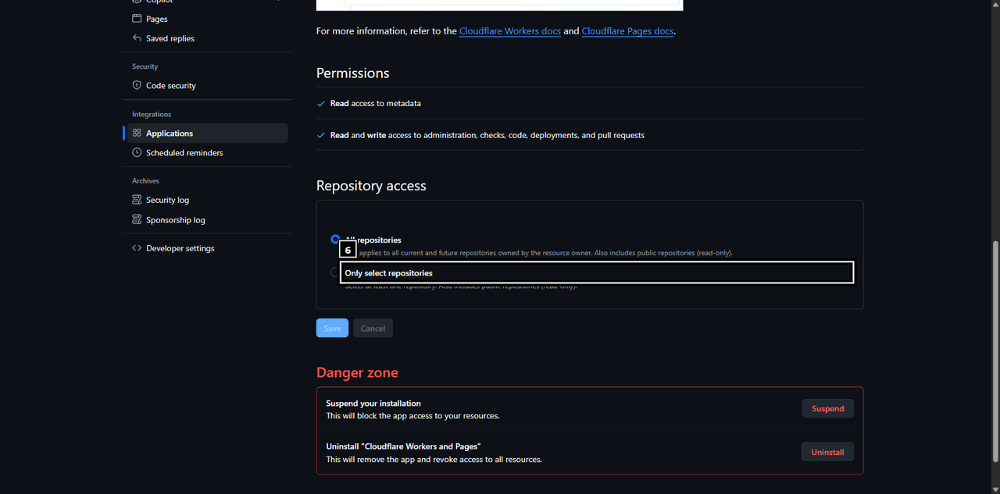
- 在「Repository access」選 6「Only select repositories」。
- 在出現的下拉選單選你的網站倉庫，例如
ZZ。 - 按「Install」，已經裝過的話按「Save」。畫面會跳回 Cloudflare。
7回到 Cloudflare，繼續
授權完成後，按鈕會變成「Continue with GitHub」。
- 點 7「Continue with GitHub」。
8選網站的倉庫
從清單裡挑出這次要上線的網站。
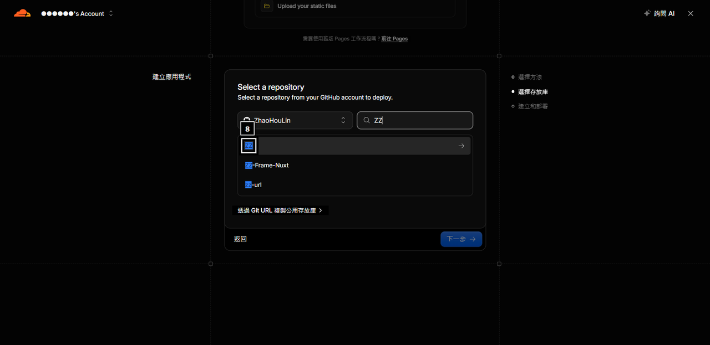
- 在右邊的搜尋框輸入倉庫名稱，例如
ZZ。 - 點 8 你的倉庫。
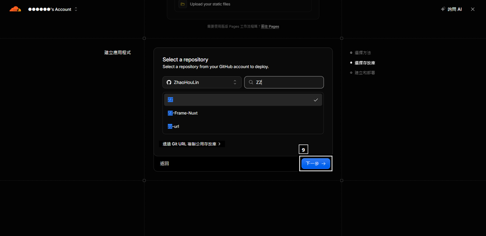
- 按 9「下一步」。
9填建置設定
告訴 Cloudflare：網站要怎麼產生、產生出來的檔案放在哪裡。
- 組建命令：把程式碼轉成可上線的網站檔案。
- 部署命令：把這些檔案上傳到 Cloudflare。
- 輸出資料夾：產生後的檔案放置位置。
--compatibility-date）填建立當天；之後要更新相容日期前，請開發者先測試。5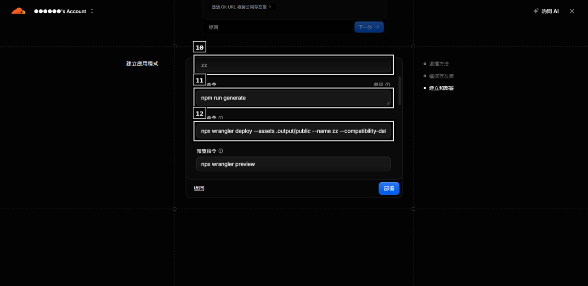
| 欄位 | 本例填的值 |
|---|---|
| 10專案名稱 | zz（自己取，只用小寫英文、數字、連字號） |
| 11組建命令 | npm run generate |
| 12部署命令 | npx wrangler deploy --assets .output/public --name zz --compatibility-date 2026-11-17
--name 後面和專案名稱一樣；--assets 後面是輸出資料夾；--compatibility-date 是建立當天的日期。 |
10加一個建置變數，然後部署
打開下面的「進階設定」，填建置變數，然後按「部署」。
NITRO_PRESET=static，讓 Nuxt 網站產生成靜態網站（事先產生好網頁檔案、供訪客讀取的網站）。其他網站請依開發者提供的設定操作，沒有就留空。這也不是登入系統或後端服務的通用部署方式。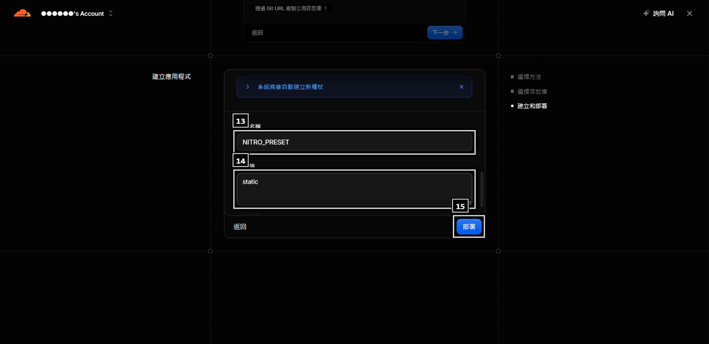
- 13 變數名稱：本例填
NITRO_PRESET。 - 14 變數值：本例填
static。 - 「啟用預覽建置」可以關掉，只建正式版就好。
- 按 15「部署」。
11等建置完成
Cloudflare 會自動抓程式碼、安裝、建置、上傳。本例當次建置為 1 分 37 秒，實際依網站大小與排隊情況而異。
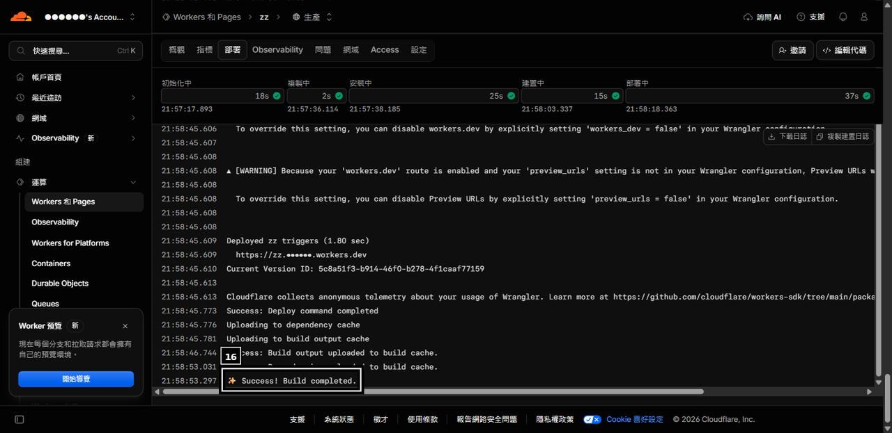
- 看到 16「✨ Success! Build completed.」就是成功了。記錄裡的
https://zz.●●●●.workers.dev就是網站的免費網址。
12打開網站確認
先用免費網址看看網站正不正常：圖片、字型、樣式都要出來。
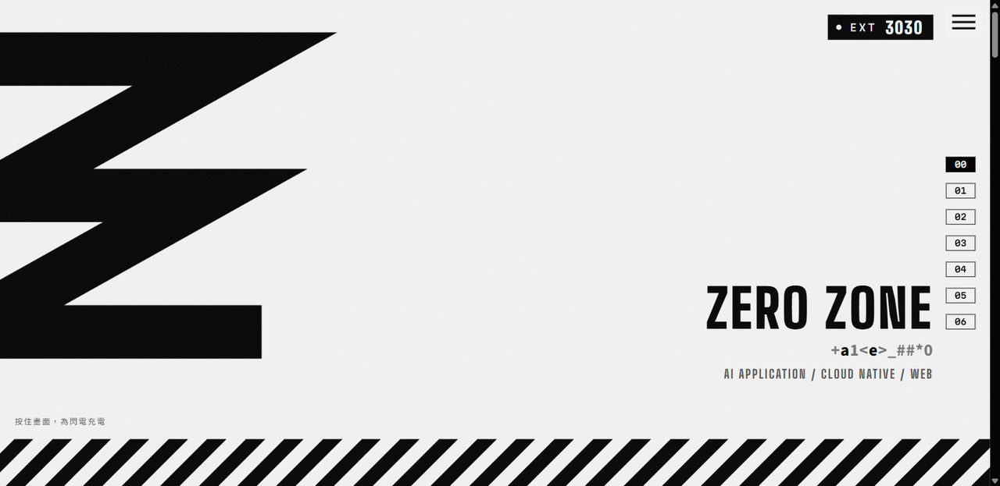
02買網域
免費網址很長，又帶著帳號名稱。買一個好記的網域，客戶才記得住。Cloudflare 賣網域是照成本價，不加價。4
13搜尋想要的網域
左邊選單「網域」→「註冊」，輸入想要的名字。
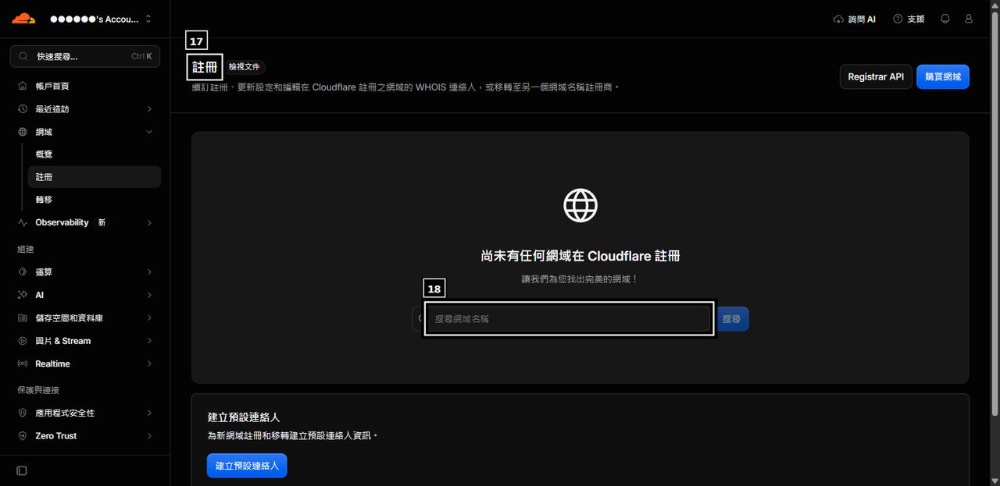
- 確認在 17「註冊」頁。
- 在 18 輸入名字，例如
zerozone，按 Enter。
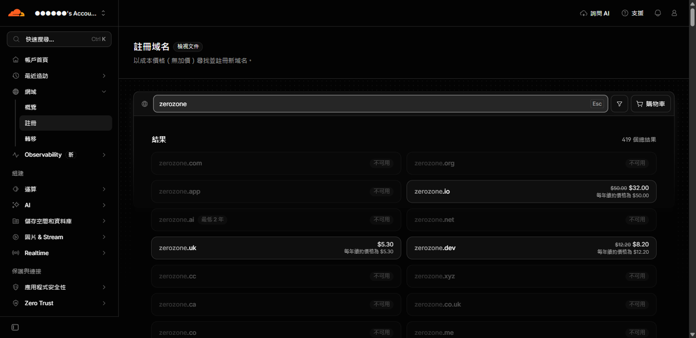
- 「不可用」表示當下不能註冊，原因不一定只有已被註冊。
- 有價格的才能買。劃掉的是原價，旁邊是首年價格，下面那行是當時顯示的續約價。
14加入購物車
選定一個，放進購物車。
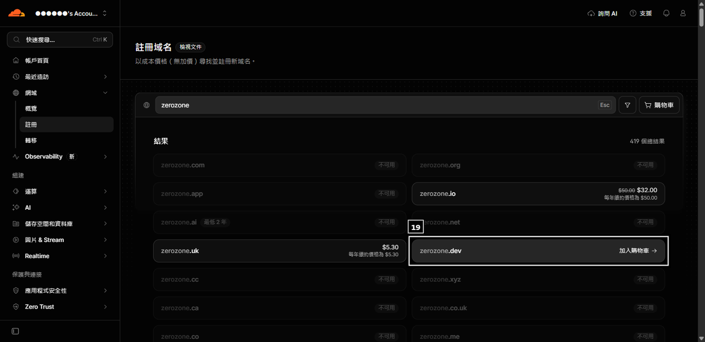
- 把滑鼠移到 19 要買的網域上，按「加入購物車」。
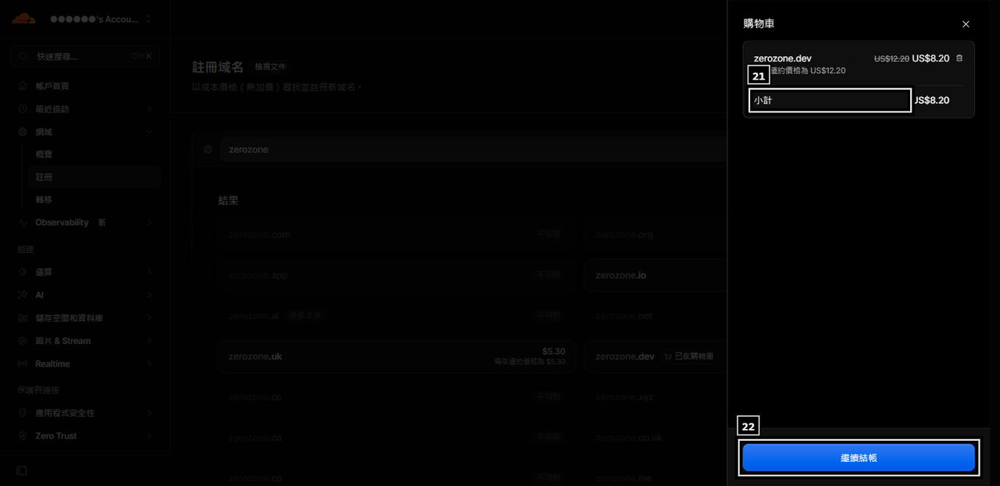
- 確認 21 金額。本例 2026-11-17 截圖：zerozone.dev 首年 US$8.20。
- 按 22「繼續結帳」。
15確認年數、自動續約，填註冊人資料
網域一定要登記一位擁有人。WHOIS 是公開查詢網域註冊資訊的服務。Cloudflare 提供個人聯絡資料遮蔽，但公開範圍仍依網域結尾與規定而異，請看結帳說明。
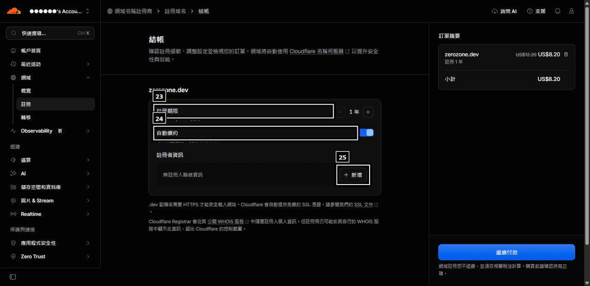
- 23 註冊期限：先買 1 年就好。
- 24 自動續約：建議開著，網域才不會不小心過期。
- 按 25「新增」，填註冊人資料。
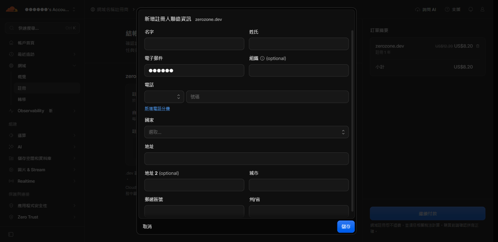
- 名字、姓氏、電子郵件、電話、國家、地址、城市、郵遞區號、州/省都要填，組織可以不填。
- 要填真實資料：網域的擁有權就是看這份資料。
- 填完按「儲存」，再按「繼續付款」。
16付款
確認訂單只有網域這一筆，勾選同意，按「註冊域名」。
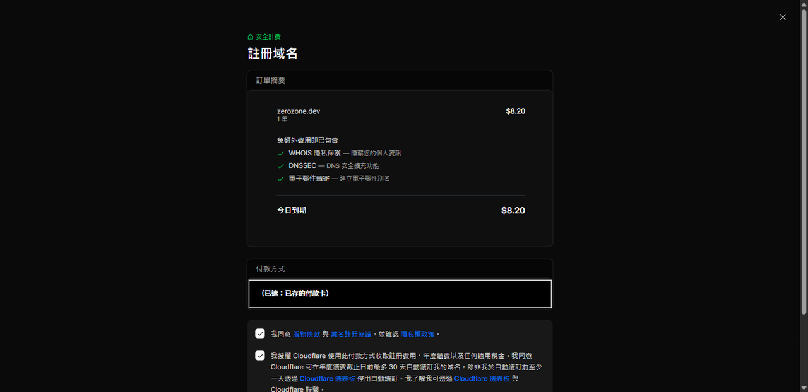
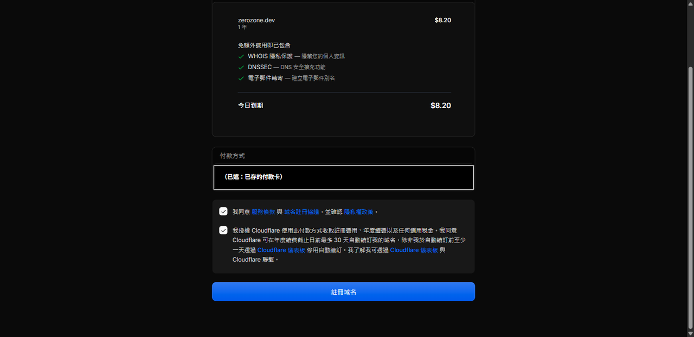
- 結帳頁寫的「免額外費用即已包含」有三項，意思分別是：
- 網域註冊不能退費，按下去前再確認一次網域的拼法。
17買好了
看到「您的網域已就緒」就完成了，網域會自動出現在你的 Cloudflare 帳號裡。
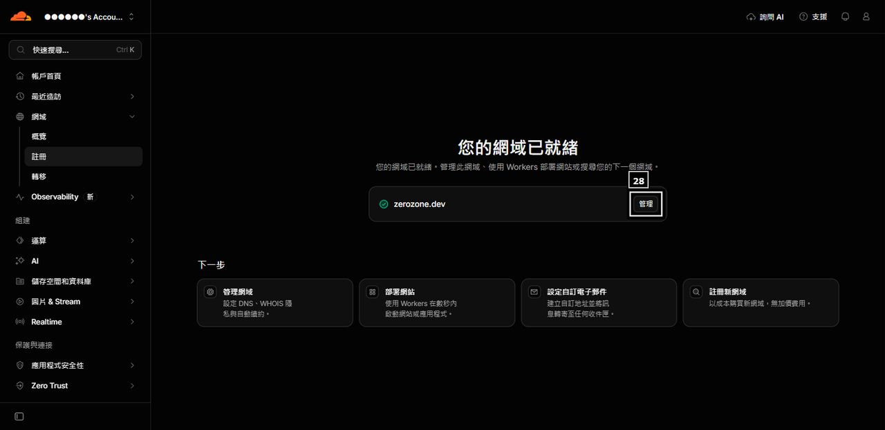
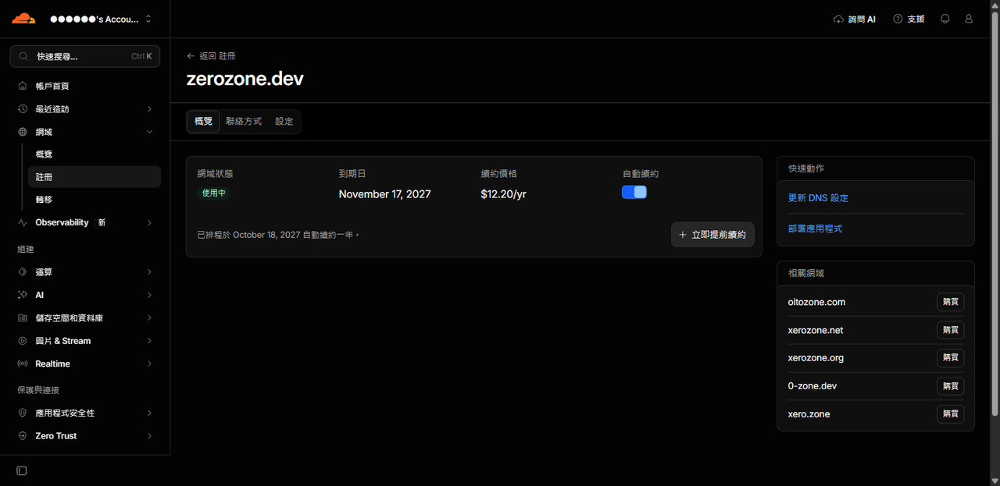
03把網域接到網站
18打開網站專案的「網域」分頁
回到「運算 › Workers 和 Pages」，點剛剛建立的專案（本例是 zz）。
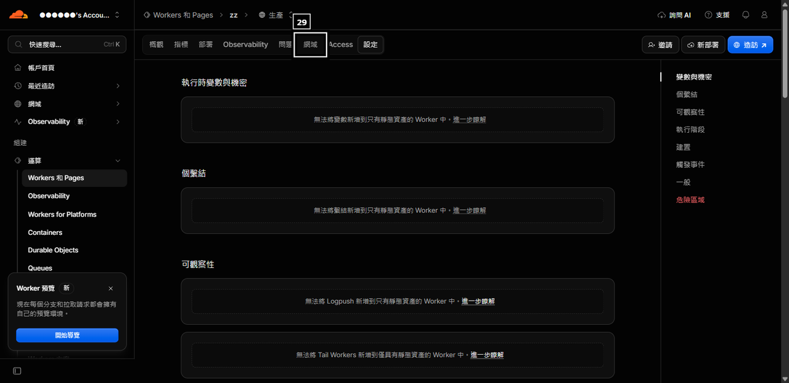
- 點上方的 29「網域」。
19新增網域
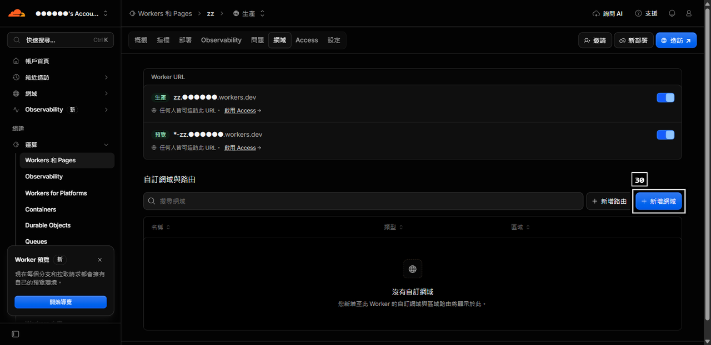
- 按 30「新增網域」。
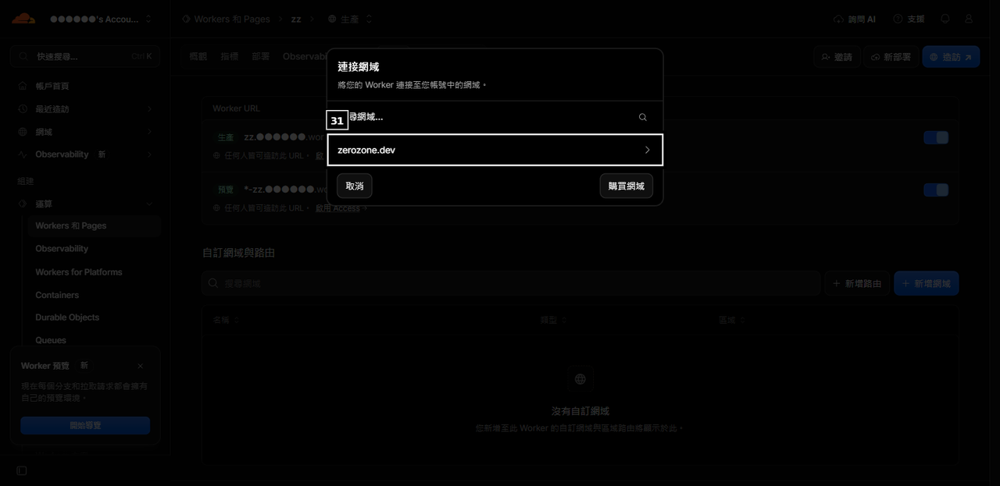
- 點 31 剛買的網域。
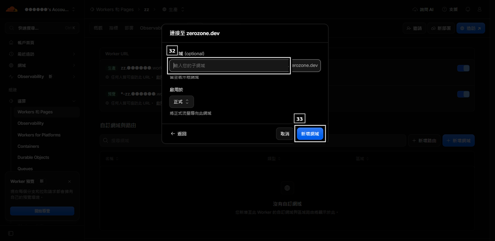
- 32 子網域留空，代表用
zerozone.dev本身。要用www.zerozone.dev的話才填www。 - 「啟用於」維持「正式」。
- 按 33「新增網域」。
20完成，打開看看
清單出現網域就完成了。新增網域後還要等 HTTPS 憑證生效，請以網址能正常開啟為準；憑證由 Cloudflare 自動申請。
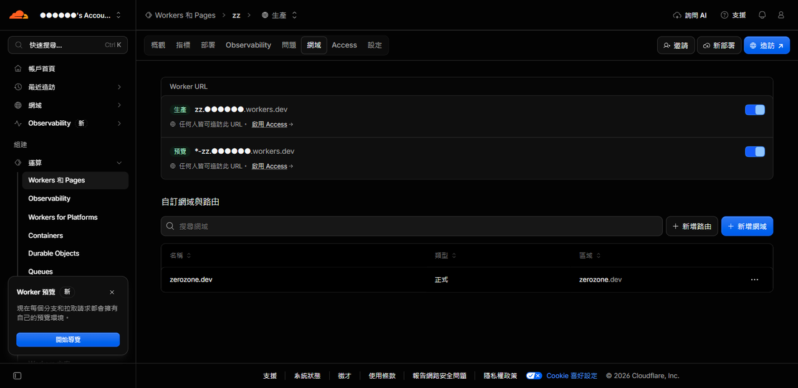
04這要花多少錢
依目前官方方案，直接取得靜態網頁、圖片等檔案的請求免費且不限次數；2 每月免費建置額度為 3,000 分鐘。3 額度不等於所有功能無限使用。若加入伺服器程式、資料庫或其他服務，須另看限制與費用。本文僅示範免費方案的靜態網站，另付網域費。
| 項目 | 費用 | 說明 |
|---|---|---|
| 放靜態網站（Workers 免費方案） | 0 元 | 僅限本文示範的靜態網站；其他功能另看官方限制。 |
| HTTPS 憑證 | 0 元 | Cloudflare 自動申請、自動更新。 |
| 網域（本例 zerozone.dev） | 首年 US$8.20 | 本例 2026-11-17 截圖：zerozone.dev 首年 US$8.20，當時顯示續約 US$12.20／年；不代表其他名稱或日後價格。請以結帳及續約當時顯示金額為準。 |
| 網域續約 | 當時顯示 US$12.20／年 | |
| WHOIS 隱私保護、DNSSEC、電子郵件轉寄 | 0 元 | 免費提供，但 DNSSEC、郵件轉寄要另外設定才會生效；郵件轉寄不是企業信箱。 |
信用卡是否另收海外交易手續費，要看各家銀行。
05常見問題
- 網域到期會怎樣？
- 自動續約有開的話，Cloudflare 會在到期前自動扣款續約；本例排程在 2027 年 10 月 18 日。如果信用卡過期或扣款失敗、網域又真的到期，網站就會打不開，嚴重的話網域會被別人買走。請記得更新帳號裡的信用卡。
- 我改了網站內容，網站會自動更新嗎？
- 修改送到你設定的正式分支（本例為
main）後，會觸發重新建置；成功後網站才會更新，時間依專案而異。到專案的「部署」分頁可以看到每一次的紀錄，建置失敗時網站會維持上一版。 - 要自己買 SSL 憑證嗎？
- 不用。Cloudflare 會自動申請免費憑證，到期也會自動更新。.dev 網域規定一定要走 HTTPS，Cloudflare 都處理好了。
- 打 www.zerozone.dev 會通嗎？
- 本例只接了 zerozone.dev 本身。要讓 www 也能用，可以照第 19 步再新增一次網域，子網域填
www。 - 我的個人資料會被公開嗎？
- WHOIS 是公開查詢網域註冊資訊的服務。Cloudflare 提供個人聯絡資料遮蔽，但公開範圍仍依網域結尾與規定而異，請看結帳說明。
- 原本放在別的地方的網站會受影響嗎？
- 本例新增另一個網址，沒有修改舊站設定，兩個網址可同時使用。若你打算把原有正式網域改指向新站，可能影響舊站或相關服務，請先請原維護者確認。
- 免費方案會不會突然被收錢？
- 不會自動升級成付費方案。本文的靜態網站沒有開任何付費功能，費用只有網域。若之後加入伺服器程式、資料庫或其他服務，請先看官方的限制與價格。主控台上寫著「升級」、「購買」的按鈕不用去按。
- 買錯網域可以退嗎？
- 不行，網域註冊不能退費。付款前請再確認一次拼法。
不想自己處理網站上線？
把網站目前的狀況、想用的網址和需求告訴零域，我們先確認適合的做法與服務範圍。
聯絡零域，討論網站上線